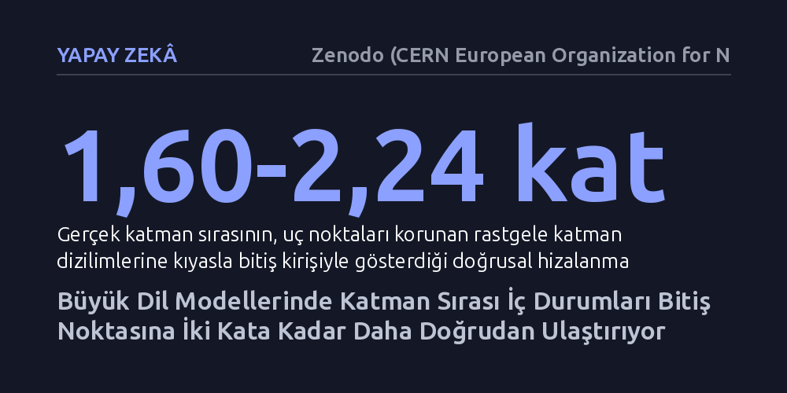

YAPAY-ZEKA · Zenodo (CERN European Organization for Nuclear Research) · 2026-10-22
Araştırmacılar, büyük dil modellerinde katman sırasının çıkarım anında ölçülebilir bir hesaplama dinamiği oluşturup oluşturmadığını inceledi. Farklı modellerde gerçek katman sırasının, iç durumları rastgele dizilime göre hedefe 1,60 ila 2,24 kat daha doğrudan yaklaştırdığı ve yerel eyleyicilerle yönlendirilebildiği saptandı.
Büyük dil modellerinin yanıt üretirken yalnızca dağınık örüntü eşleştirmesi yapmadığını, katmanlar boyunca hedefe doğru ilerleyen ölçülebilir ve yönlendirilebilir bir geometrik rota izlediğini gösterir.

Büyük dil modelleri üzerine yürütülen mekanik araştırmaların çoğu, bugüne kadar belirli parametrelerin, dikkat başlıklarının ya da tekil nöronların hangi görevleri üstlendiğini haritalandırmaya odaklandı. Ancak bu parçaları tek tek belirlemek, bir modelin tek bir çıkarım anında soruyu nasıl adım adım işleyip yanıta dönüştürdüğünü açıklamakta yetersiz kalıyor. Onlarca katmandan oluşan bu yapılarda katmanların diziliş sırasının rastgele bir birikim mi yarattığı, yoksa ölçülebilir bir hesaplama süreci mi tanımladığı sorusu henüz net olarak yanıtlanamamıştı.
Bu sorunun yanıtı, yapay zekanın iç işleyişini yalnızca istatistiksel bir ağırlık yığını olarak değil, katmanlar boyunca evrilen dinamik bir süreç olarak kavrayabilmek açısından kritik önem taşıyor. Eğer katmanların sırası hedefe yönelik ölçülebilir bir rota çiziyorsa, modellerin yanıt üretirken geçtiği ara durakları matematiksel olarak takip etmek ve hatta bu sürece dışarıdan hedefe yönelik müdahalelerde bulunmak mümkün hale gelebilir.
Araştırma ekibi bu dinamiği ortaya çıkarmak için açık kaynaklı Qwen, Llama ve Gemma modellerinin farklı boyutlardaki sürümlerini incelemeye aldı. Modelin her katmanındaki gizli durum vektörlerinin oluşturduğu sıra, çok boyutlu uzayda çizilen bir yörünge olarak ele alındı. Katman sırasının gerçekten yönlendirici bir hesaplama yapıp yapmadığını anlamak için başlangıç girdisi ve nihai çıktı sabit tutuldu; aradaki katmanların sırası ise rastgele karıştırılarak alternatif yollar türetildi.
Deneylerde, modelin gerçek katman sırasıyla oluşturduğu rota ile ilk ve son katman arasındaki en kısa hat olan bitiş kirişi arasındaki açısal uyum ölçüldü. Araştırmacılar ayrıca kelime tahminine dayalı dolaylı okumalar yerine doğrudan gizli durum koordinatlarını temel alarak, alternatif aday kelimeler arasındaki yarışın katmanlar boyunca nasıl şekillendiğini hesaplanabilir bir çerçeveye oturttu.
Elde edilen sonuçlar, gerçek katman diziliminin ürettiği yörüngenin, uç noktaları aynı kalan rastgele dizilimlere göre bitiş çizgisine 1,60 ila 2,24 kat daha doğrudan yöneldiğini gösterdi. Katmanlar rastgele bir yığılma üretmiyor, ara durumları hedefe doğru belirgin bir hat üzerinde taşıyordu. Üstelik bu sıra etkisi yalnızca eğitilmiş modellerde değil, aynı Qwen mimarisinin henüz hiçbir metinle eğitilmemiş üç rastgele başlangıç sürümünde de gözlemlendi ve eğitimsiz ağlarda daha güçlü çıktı. Bu bulgu, rotanın yalnızca öğrenilen bilgilerden değil, mimarinin kendi yapısal iskeletinden beslendiğine işaret ediyor.
Araştırmacılar bu iç rotanın dışarıdan yönlendirilip yönlendirilemeyeceğini de test etti. Basit eklemeli müdahaleler sonuç vermezken, katmanlar arasındaki geçişlere uygulanan yerel eyleyiciler iç yörüngeleri seçici biçimde denetlemeyi başardı. Bir güven eşiği uygulandığında, test kümesindeki 87 kapanış yörüngesinden 17'si kelime dağarcığındaki en olası birinci aday sınırını aşarak hedeflenen çıktıya ulaştırıldı; bu sırada kalan 203 normal çıktının hiçbiri bozulmadan korundu.
Bu bulgular, transformatör mimarisine sahip modellerin çıkarım anında katman katman izlenebilen, hesaplanabilen ve davranışsal çıktıları olan bir iç dinamik barındırdığını ortaya koyuyor. Katman sırasının sağladığı yönelim, modelin iç dünyasında kararların hangi aşamalarda netleştiğini anlamak için somut bir zemin sunuyor. Katmanlar arası geçişleri seçici biçimde tetikleyebilmek, gelecekte modellerin belirli yanıtlara nasıl ulaştığını denetlemek adına önemli bir araç ailesi tanımlıyor.
Buna karşın yazarların da vurguladığı gibi, bu çalışma 'büyük dil modellerinin dinamiklerine dair eksiksiz bir teori oluşturmadığı gibi yanıt doğruluğunun tam kontrolünü de sağlamıyor'. Katmanlar boyunca uzanan geometrik rota görünür kılınmış olsa da modelin ne zaman doğru ne zaman hatalı bilgi üreteceğini kesin olarak kestirmek ve bunu kusursuz biçimde denetlemek için daha kapsamlı araştırmalara ihtiyaç duyuluyor.